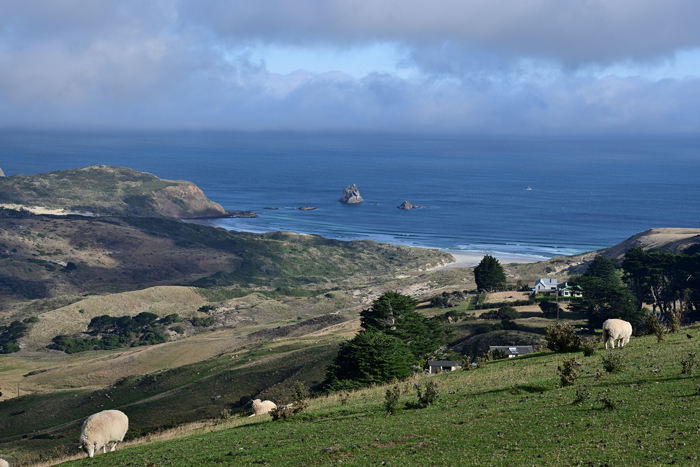

Sheep Mountain
Dunedin Tourist Location
Dunedin's Mystical Mountain!
Sheep Mountain is a beautiful and mysterious destination
located in the hills surrounding Dunedin. The mountain is
known for its rolling green slopes, unusual rock formations,
and peaceful atmosphere. Sheep can often be seen grazing
across the hills, giving the mountain its distinctive name.
The area is surrounded by native vegetation and dramatic
countryside, making it a popular destination for visitors
wanting to escape the city. Walking tracks lead through
the hills and provide views across the surrounding
landscape. Visitors can enjoy hiking, photography,
sightseeing, and exploring the natural environment.
Sheep Mountain is particularly well known for its misty
mornings. When fog settles across the hills, the landscape
takes on a mysterious appearance, making it a popular
location for photographers and visitors looking for a
unique experience. The mountain is also a peaceful place
to watch the sunrise or sunset.
Visiting Sheep Mountain is an affordable activity, with
no admission fee required. Visitors should still consider
transport, food, and suitable clothing when planning their
trip, especially during colder or wetter weather.
Facts:
- Located in the hills surrounding Dunedin
- Known for its rolling green landscape
- Named after the sheep that graze across the hills
- Surrounded by native vegetation
- Features scenic walking tracks
- Popular for hiking and photography
- Known for its misty and atmospheric scenery
- Popular location for sunrise and sunset views
Costs:
- Entry to Sheep Mountain: Free
- Walking and sightseeing: Free
- Estimated food costs: $10-$30 per person
- Estimated transport costs: $10-$30
- Estimated parking costs: Free
- Estimated outdoor equipment hire: $20-$50
- Estimated total visit cost: $20-$80 per person